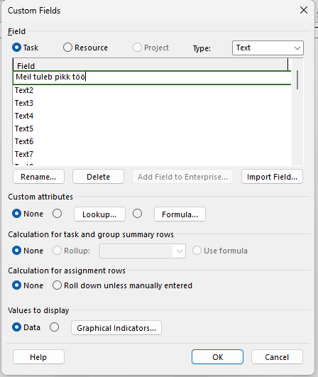
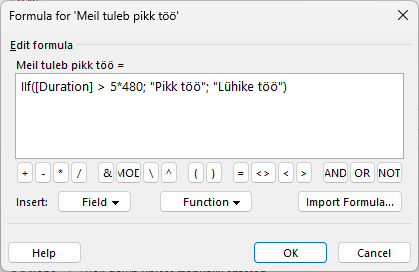
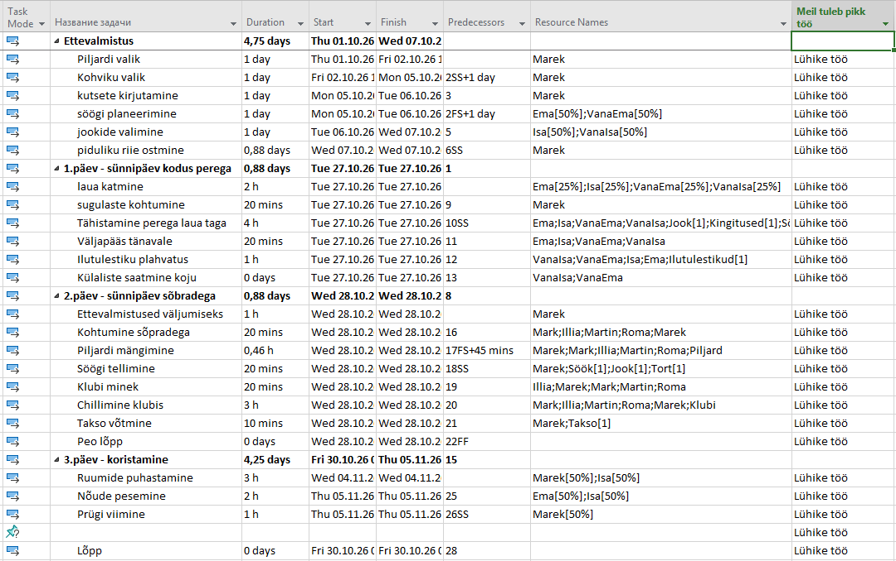

Mis on arvutusväli?
Arvutusväli on Microsoft Projectis "Custom Field", kus saad kasutada oma valemeid. See on kasulik, kui soovid automaatselt arvutada kulusid, riske või muid näitajaid, mida tavaline tabel ei näita.

Kuidas lisada valemit?
Vali menüüst Project > Custom Fields. Vali väli ja klõpsa nupule Formula. Siia saad sisestada matemaatilise tehte, näiteks korrutada ülesande kestuse ressursi hinnaga.

Milleks see kasulik on?
See säästab aega ja vähendab vigu. Sa ei pea andmeid käsitsi arvutama — kui muudad ülesande aega, siis arvutusväli uueneb automaatselt.
